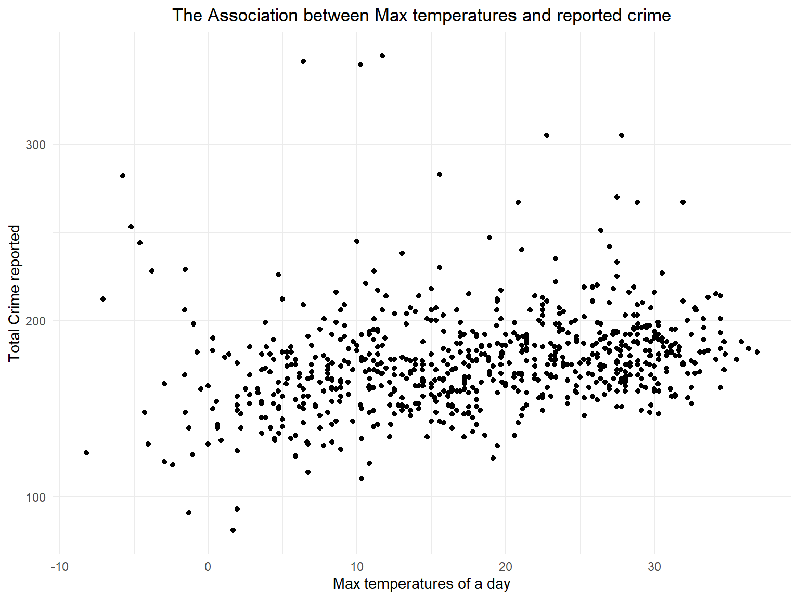
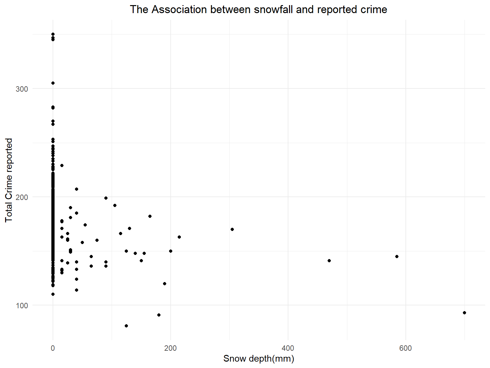
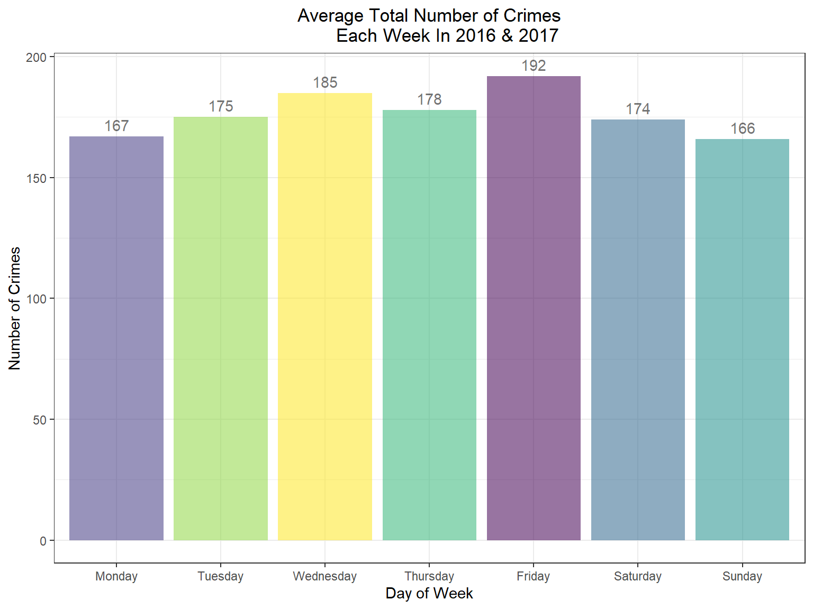
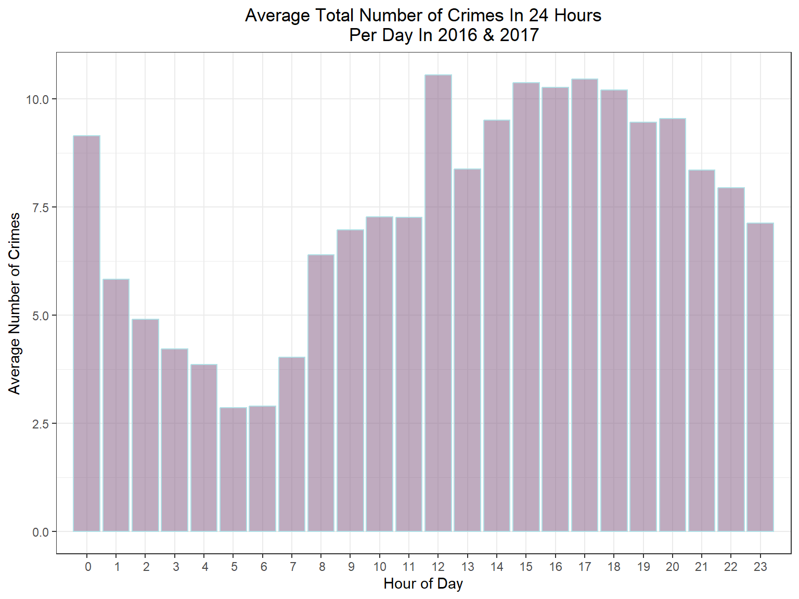
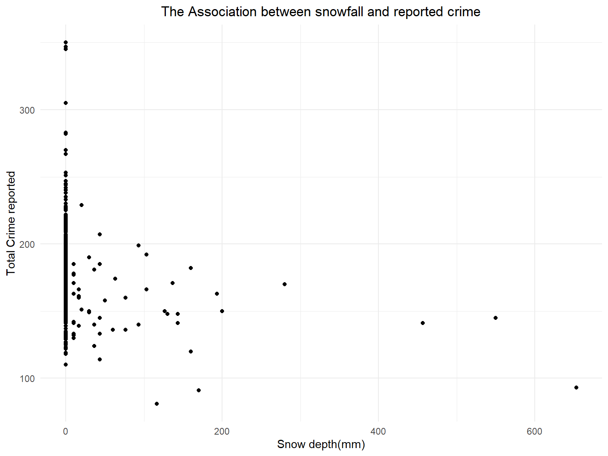

Report
Motivation
Based on the Lombroso’s Theory of Crime, natural climatic factors can influence crime rates. The Extreme temperatures sap one’s energy and reduce the passion for crime. The suitable temperatures stimulate one’s nerve like alcohol and makes it easier to commit criminal acts in an excited situation.
In fact, the weather in criminology covers many aspects. Apart from the weather itself, it also involves the seasons as well as the temperature. All of these natural events occur in the spatial and temporal dimensions and recur with regularity from year to year constitutes a season. In order to fully discuss the changes of crime rates in the time dimension, we also consider the changes in crime rates at different times of the day and on different days of the week.
Initial Questions
The initial question we want to investigate is if weather can have an effect on crime rates. As we collected the data, we discovered that the dataset also include the time and date of each crime. This discovery led us to the discussion whether different time of the day or day of the week can impact crime rates.
Data
In Our project, there are two datasets, including NYPD Complaint Data Historic and weather data. We obtained crime data in New York City from NYC Open Data * Crime data of New York City is downloaded from the link below : NYPD Complaint Data Historic.
This dataset contains 780 million felony, misdemeanor, and violation crimes reported to the New York City Police Department (NYPD) from 1910 to 2021. Each record contains detailed information of a single crime reported to NYPD. In our project, we select the records from 2016-01-01 to 2017-12-31 to do analysis and modeling.
crime_raw <- read.csv("data/nyc_complaint_data.csv")
crime_df <- crime_raw %>%
janitor::clean_names() %>%
mutate(
date = mdy(cmplnt_fr_dt),
hour_of_day = as.POSIXct(cmplnt_fr_tm, format="%H:%M:%OS"),
borough = boro_nm,
level = law_cat_cd,
offense = ofns_desc,
offense_classification = pd_desc,
place = prem_typ_desc,
suspect_age = susp_age_group,
suspect_race = factor(susp_race),
victim_age = vic_age_group,
victim_race = factor(vic_race)) %>%
mutate(
day_of_week = factor(weekdays(date)),
mon = month(date),
hour_of_day = hour(hour_of_day)
)
crime_df <- crime_df %>%
select(date:mon, latitude,longitude)For further analysis, we converted the original dataset to make it more readable and selected some key variables:
date. Date the crime occurs.hour_of_day. Occurring time of the crimesborough. Borough the crime occurs.level. Level of offense: felony, misdemeanor, violation.offense. Description of offense.offense_classification. Description of internal classification of offense.place. Specific description of premises; grocery store, residence,street, etc.suspect_age. Suspect’s Age Group.suspect_race. Suspect’s Race Description.victim_age. Victim’s Age Group.victim_race. Victim’s Race Description.day_of_week. Day of week that a crime occurs.mon. Months in a year that a crime occurs.latitude. Latitude of the place the crime occurs.longitude. Longitude of the place the crime occurs.
Considering that weather may be a reason of committing crime, we used data from three weather stations in New York and calculate the mean weather parameters to represent the weather of New York.
Weather data is obtained from website of NOAA.
We selected the three weather stations that can indicate the weather in Manhattan. And we created average_weather dataset to see the mean temperature, percipitation, and snowfall for each day.
weather = rnoaa::meteo_pull_monitors(
c("USW00094728", "USW00094789", "USW00014732"),
var = c("PRCP", "SNOW", "SNWD", "TMAX", "TMIN"),
date_min = "2016-01-01",
date_max = "2017-12-31") %>%
mutate(
id=case_when(
id=="USW00094728" ~ "CentralPark_NY",
id=="USW00094789" ~ "JFK Airport_NY",
id=="USW00014732" ~ "La Guardia_NY"),
tmin = tmin / 10,
tmax = tmax / 10) %>%
select(id, everything())
average_weather <- weather %>%
group_by(date) %>%
summarise(
mean_snow = mean(snwd),
mean_prcp = mean(prcp),
mean_tmin = mean(tmin),
mean_tmax = mean(tmax)
) The key variables of weather are:
mean_snow. snow depth(mm).mean_prcp. precipitation(tenths of mm)mean_tmin. minimum temperature of a daymean_tmax. maximum temperature of a day
Exploratory Analysis
Based on some publicly available information, we knew that weather affect crime rate. For example, the hotter the weather is, the more likely people are to commit crimes. The worse the weather is, the less likely people are to go out and commit crimes. Here we want to predict number of crimes each day in New York as our outcome. And the precipitation, snow depth, maximum temperature and minimum temperature can be considered as predictors.
First we created a new dataset from the original crime_df dataset, grouped by date, month, and day of the week and summarized the total number of crimes. Then we merged it with weather dataset by date
new_crime_df = crime_df %>%
group_by(date,mon,day_of_week)%>%
summarize(
total_crime = n(),
)
crime_weather = merge(new_crime_df, average_weather, by = "date")
crime_weather <- crime_weather %>%
mutate(
month = factor(mon)
)We first checked the distribution of number of crime cases each day in New York.
ggplot(data = crime_weather,aes(x = total_crime)) + geom_histogram()+
labs(title = "The distribution of daily cases",
y = "Counts",
x = "Number of crimes per day")+
theme(plot.title = element_text(hjust = 0.5))
The distribution of daily cases is approximately normally distributed, thus we do not need to transform the value of the outcome.
Then, we use scatter plot to investigate the association between weather and cases/crime. The predictors for weather included minimum and maximum temperature, percipitation and snowfall.
ggplot(crime_weather, aes(x = mean_tmax, y = total_crime)) + geom_point()+ labs(title = "The Association between Max temperatures and reported crime",
y = "Total Crime reported",
x = "Max temperatures of a day")+
theme(plot.title = element_text(hjust = 0.5))
ggplot(crime_weather, aes(x = mean_tmin, y = total_crime)) + geom_point()+ labs(title = "The Association between Min temperatures and reported crime",
y = "Total Crime reported",
x = "Min temperatures of a day")+
theme(plot.title = element_text(hjust = 0.5))ggplot(crime_weather, aes(x = mean_prcp, y = total_crime)) + geom_point()+ labs(title = "The Association between precipitation and reported crime",
y = "Total Crime reported",
x = "Precipitation(tenths of mm)")+
theme(plot.title = element_text(hjust = 0.5))ggplot(crime_weather, aes(x = mean_snow, y = total_crime)) + geom_point()+ labs(title = "The Association between snowfall and reported crime",
y = "Total Crime reported",
x = "Snow depth(mm)")+
theme(plot.title = element_text(hjust = 0.5))
From the plots, we noticed that all of the four predictors may have association with the number of cases of crime in New York. Association between crimes and min/max temperature have a more obvious linear trend, whereas that between crimes and precipitation and snow depth have a less obvious trend.
We also want to investigate whether the month, day of week, and hour of the day can be predictors.
# Crime numbers by month
crime_month = new_crime_df %>%
group_by(mon) %>%
summarize(mean_total_crimes = mean(total_crime)) %>%
rename(month = mon) %>%
mutate(month = as.character(month))
mp = ggplot(crime_month,
aes(x = month, y = mean_total_crimes, fill = month)) +
geom_col(fill = "lightblue",colour = "steelblue") +
geom_text(aes(label = round(mean_total_crimes)), vjust = -0.5, size=3 ) +
labs(x="Month",
y="Number of Crimes",
title = "Average Total Number of Crimes
By Month In 2016 & 2017")+
scale_x_discrete(limits=crime_month$month)+
theme_bw()+
theme(legend.position = "off", plot.title=element_text(hjust=0.5))
mp#Crime and weekdays
crime_weekday = new_crime_df %>%
group_by(day_of_week) %>%
summarise(mean_crime = round(mean(total_crime),0)) %>%
mutate(char = case_when(day_of_week == "Monday" ~ 01,
day_of_week == "Tuesday" ~ 02,
day_of_week == "Wednesday" ~ 03,
day_of_week == "Thursday" ~ 04,
day_of_week == "Friday" ~ 05,
day_of_week == "Saturday" ~ 06,
day_of_week == "Sunday" ~ 07)) %>%
arrange(char) %>% select(-char)
weekday = ggplot(crime_weekday,
aes(x = day_of_week, y = mean_crime, fill = day_of_week, alpha=0.2)) +
geom_col() +
geom_text(aes(label = mean_crime), vjust = -0.5) +
labs(x="Day of Week",
y="Number of Crimes",
title = "Average Total Number of Crimes
Each Week In 2016 & 2017") +
scale_x_discrete(limits=crime_weekday$day_of_week) +
theme_bw() +
theme(legend.position = "off", plot.title=element_text(hjust=0.5))
weekday
#Crime and hours
crime_hour = crime_df %>%
group_by(date,mon,day_of_week, hour_of_day)%>%
summarize(
total_crime = n(),
) %>%
group_by(hour_of_day) %>%
summarize(mean_crime = mean(total_crime))
crime_hour_plot = ggplot(crime_hour,
aes(x = hour_of_day, y = mean_crime, fill = hour_of_day, alpha=0.2)) +
geom_col(fill = "plum4", colour = "powderblue") +
labs(x="Hour of Day",
y="Average Number of Crimes",
title = "Average Total Number of Crimes In 24 Hours
Per Day In 2016 & 2017") +
scale_x_discrete(limits=crime_hour$hour_of_day) +
theme_bw() +
theme(legend.position = "off", plot.title=element_text(hjust=0.5))
crime_hour_plot
We can observe that number of crimes slightly decreases during the month from January to March and remains constant for the rest of year. And number of crimes fluctuate when comparing each day of the week. Friday and Wednesday have relatively higher number of crimes in average. When comparing each hour of the day, we can see that during the hour from 1AM to 11AM, the number of crimes is lower than the rest of the day, with 5AM and 6AM have the lowest number of crimes in average.
Interactive Map
We first created a map on the spatial distribution of crime incidents in different time period of the day, but we want to see the distribution of crimes within each zip code for more practical purpose.
#read crime_df data
crime_df = read_csv("data/crime_df.csv") %>%
janitor::clean_names() %>%
rename(case_number = x1)
#define crime_df_map for our map
crime_df_map = drop_na(crime_df, latitude)crime_plot =
crime_df %>%
filter(!is.na(borough)) %>%
plot_ly(
lat = ~latitude,
lon = ~longitude,
frame = ~hour_of_day,
type = "scattermapbox",
mode = "markers",
alpha = 0.2,
color = ~borough) %>%
layout(
title = "Spatial distribution of crime incidents",
mapbox = list(
style = 'carto-positron',
zoom = 9,
center = list(lon = -73.9, lat = 40.7)),
legend = list(title=list(text='<b> Borough </b>'))
) %>%
animation_slider(
currentvalue = list(prefix = "Hour of day: ", font = list(color="black"))
)Crime rate for a zip code region is defined as number of crime incidents occurred in the zip code region during 2016-01-01 and 2017-12-31, divided by population size in the corresponding zip code region. We matched each crime incident to a zip code using its coordinates (longitude and latitude). 300 crimes cannot be matched to a zip code and thus were dropped.
zips = readOGR("data/cb_2015_us_zcta510_500k/cb_2015_us_zcta510_500k.shp", verbose=FALSE)
zips = spTransform(zips, CRS("+proj=longlat +datum=WGS84 +ellps=WGS84 +towgs84=0,0,0"))
#extract only lon and lat
crime_lat_long = select(crime_df_map, longitude, latitude)
#transform coordinates into a SpatialPointsDataFrame
crime_spdf = SpatialPointsDataFrame(coords = crime_lat_long, data = crime_lat_long, proj4string = CRS("+proj=longlat +datum=WGS84 +ellps=WGS84 +towgs84=0,0,0"))
#subset only the zipcodes in which points are found
crime_zips = zips[crime_spdf, ]
#redefine crime_df_map to include zipcodes
crime_df_map = cbind(crime_df_map, over(crime_spdf, crime_zips[,"ZCTA5CE10"]))
crime_df_map = rename(crime_df_map, zip = ZCTA5CE10)
#300 crime incidents can’t be matched to a zip code, so we drop them.
crime_df_map =
crime_df_map %>%
drop_na(zip)In order to make meaningful data analysis, we want zip codes to represent regions with similar population. However, some zip code regions are very small, among which there are even some buildings that have their own zip codes. To deal with the challenges of zip codes, we convert zip codes to modified zip codes to account for discrepancies in population size. Modified zip codes represent regions with similar population size.
zcta_conv = read_csv("data/ZCTA-to-MODZCTA.csv")
zcta_conv$ZCTA = as.character(zcta_conv$ZCTA)
zcta_conv$MODZCTA = as.character(zcta_conv$MODZCTA)
# match the zipcode in the original dataset to the modified zip code.
crime_df_map = crime_df_map %>%
left_join(rename(zcta_conv, zip = ZCTA), by = "zip") %>%
rename(mod_zip = MODZCTA)
#4 crimes cannot be matched to a modifed zip code.
crime_df_map = drop_na(crime_df_map, mod_zip)
# shapefifle based on modified zip code
modzcta = st_read("data/MODZCTA_2010/MODZCTA_2010.shp", quiet=TRUE) %>%
janitor::clean_names()
# merge files
crime_df_geo =
geo_join(modzcta, crime_df_map, "modzcta", "mod_zip", how = "inner") %>%
rename(mod_zip = modzcta)Based on the dataset obtained above, we can get number of crimes in each zip region.
number_of_crimes =
crime_df_geo %>%
group_by(mod_zip) %>%
summarize(number_of_crimes = n()) %>%
arrange(desc(number_of_crimes))
head(number_of_crimes)## Simple feature collection with 6 features and 2 fields
## Geometry type: MULTIPOLYGON
## Dimension: XY
## Bounding box: xmin: 996000 ymin: 172000 xmax: 1020000 ymax: 270000
## Projected CRS: Lambert_Conformal_Conic
## # A tibble: 6 × 3
## mod_zip number_of_crimes geometry
## <chr> <int> <MULTIPOLYGON [US_survey_foot]>
## 1 11212 2125 (((1005996 177746, 1005954 177710, 1005926 177744, 1…
## 2 11207 2114 (((1012026 179982, 1011954 179986, 1011812 179962, 1…
## 3 11208 2044 (((1019242 174790, 1019054 174514, 1019026 174530, 1…
## 4 10467 1911 (((1017492 255688, 1017464 255668, 1017336 255972, 1…
## 5 10456 1899 (((1010978 237664, 1010960 237576, 1010546 237332, 1…
## 6 10029 1806 (((997976 225838, 997840 225592, 997478 225792, 9974…As to crime crate, we obtained population of each zip code region from World Population Review.
pop_zip = read_csv("data/csvData.csv") %>%
janitor::clean_names()
pop_zip$zip = as.character(pop_zip$zip)
#filter out regions in New York City
pop_zip = pop_zip %>%
filter(county %in% c("New York", "Kings", "Queens", "Bronx", "Richmond"))
# manually added zip code 10065 because missing (data from Census Reporter)
pop_zip[nrow(pop_zip) + 1,] = list("10065","
New York City", "New York", 30339)After converting the zip code to the modified one and got the population from each region, we merged population file with the number of crimes calculated before and calculated the crime rates.
pop_mod_zip = pop_zip %>%
left_join(rename(zcta_conv, zip = ZCTA), by = "zip") %>%
rename(mod_zip = MODZCTA) %>%
group_by(mod_zip) %>%
summarize(population = sum(population))
crime_rate = left_join(number_of_crimes, pop_mod_zip, by = "mod_zip")
crime_rate$crime_rate = crime_rate$number_of_crimes / crime_rate$population * 100
crime_rate =
crime_rate %>%
select(mod_zip, crime_rate) %>%
group_by(crime_rate) %>%
arrange(desc(crime_rate))
head(crime_rate)## Simple feature collection with 6 features and 2 fields
## Geometry type: MULTIPOLYGON
## Dimension: XY
## Bounding box: xmin: 979000 ymin: 194000 xmax: 999000 ymax: 223000
## Projected CRS: Lambert_Conformal_Conic
## # A tibble: 6 × 3
## # Groups: crime_rate [6]
## mod_zip crime_rate geometry
## <chr> <dbl> <MULTIPOLYGON [US_survey_foot]>
## 1 10075 11.2 (((998794 219854, 998630 219622, 998616 219632, 998598 219…
## 2 10018 9.00 (((982886 215080, 982752 214836, 982664 214676, 982630 214…
## 3 10001 6.23 (((987646 210360, 987522 210136, 987296 210262, 987334 210…
## 4 10004 6.19 (((982030 197212, 981958 197118, 981652 197444, 981784 197…
## 5 10006 5.61 (((980782 196772, 980576 196444, 980358 196542, 980276 196…
## 6 10036 4.96 (((985182 215442, 985136 215360, 985084 215414, 984866 215…Finally, the interactive map that shows the crime rates in the five boroughs of New York City according to zip code region can be found here. We can observe that in the years of 2016 and 2017, zip code 10075 has the highest crime rate. Zip code 10018 and 10001 also have relatively high crime rates. And Manhattan in general contains zipcode region of highest crime rates.
#label
labels = sprintf(
"<strong>%s</strong><br/>Crime rate is %g%<br/>during the period from 2016-01-01 to 2017-12-31.", crime_rate$mod_zip, crime_rate$crime_rate) %>%
lapply(htmltools::HTML)
#color palette
pal = colorBin(palette = "OrRd", 9, domain = crime_rate$crime_rate)
map_interactive = crime_rate %>%
st_transform(crs = "+init=epsg:4326") %>%
leaflet() %>%
addProviderTiles(provider = "CartoDB.Positron") %>%
addPolygons(label = labels,
stroke = FALSE,
smoothFactor = 0.5,
opacity = 1,
fillOpacity = 0.7,
fillColor = ~ pal(crime_rate),
highlightOptions = highlightOptions(weight = 5,
fillOpacity = 1,
color = "black",
opacity = 1,
bringToFront = TRUE)) %>%
addLegend("bottomright",
pal = pal,
values = ~ crime_rate,
title = "Crime cases per 100 residents<br/>during the period from<br/>2016-01-01 to 2017-12-31",
opacity = 0.7) %>%
addTiles("Interactive map of crime rate")
#saveWidget(map_interactive, "nyc_crime_rate_map.html")To display our results in a more interesting way, we created a shiny app which shows crime counts and rate in each modified zip code region for every 4-week interval. The link to shiny app can also be accessed with the same link above.
crime_month = readRDS("crime_month.RDS")
#define UI
ui = fluidPage(
titlePanel("NYC crime visualization by 4 weeks interval and modified zip code regions"),
sidebarLayout(
sidebarPanel(
h5("Data metrics are aggregated by 4 weeks and categorized by the first day in the 4 weeks interval. Data metrics are grouped into modified zip code regions instead of standard zip code regions to account for the discrepant population size in different standard zip code regions. Crime counts for a modified zip code region is the aggregated number of crime incidents occurred in the modified zip code region during the 4 weeks period starting from the specified date. Crime rate is the corresponding crime counts divided by the population size in the corresponding modified zip code region."),
selectInput(
"date",
"Select a date (a 4 weeks period starting from):",
choices = unique(crime_month$month_following)
)
),
mainPanel(
tabsetPanel(
tabPanel("Crime counts", leafletOutput("crime_counts")),
tabPanel("Crime rate", leafletOutput("crime_rate"))
)
)
)
)
#define server logic
server <- function(input, output){
month_selected <- reactive({
w <- crime_month %>%
filter(month_following == input$date)
return(w)
})
output$crime_counts <- renderLeaflet({
pal <- colorBin(palette = "YlGn", 9, domain = crime_month$crime_counts)
labels = sprintf(
"<strong>%s</strong><br/>%g incidents during the 4 weeks period",
month_selected()$modzcta, month_selected()$crime_counts) %>%
lapply(htmltools::HTML)
month_selected() %>%
st_transform(crs = "+init=epsg:4326") %>%
leaflet() %>%
addProviderTiles(provider = "CartoDB.Positron") %>%
setView(-73.9, 40.7, zoom = 10) %>%
addPolygons(label = labels,
stroke = FALSE,
smoothFactor = 0.5,
opacity = 1,
fillOpacity = 0.7,
fillColor = ~ pal(month_selected()$crime_counts),
highlightOptions = highlightOptions(weight = 5,
fillOpacity = 1,
color = "black",
opacity = 1,
bringToFront = TRUE)) %>%
addLegend("bottomright",
pal = pal,
values = ~ crime_counts,
title = "Crime incident counts",
opacity = 0.7)
})
output$crime_rate <- renderLeaflet({
pal <- colorBin(palette = "OrRd", 9, domain = crime_month$crime_rate * 10000)
labels = sprintf(
"<strong>%s</strong><br/>%g incidents per 10 thousand residents<br/>during the 4 weeks period",
month_selected()$modzcta, month_selected()$crime_rate * 10000) %>%
lapply(htmltools::HTML)
month_selected() %>%
st_transform(crs = "+init=epsg:4326") %>%
leaflet() %>%
addProviderTiles(provider = "CartoDB.Positron") %>%
setView(-73.9, 40.7, zoom = 10) %>%
addPolygons(label = labels,
stroke = FALSE,
smoothFactor = 0.5,
opacity = 1,
fillOpacity = 0.7,
fillColor = ~ pal(month_selected()$crime_rate * 10000),
highlightOptions = highlightOptions(weight = 5,
fillOpacity = 1,
color = "black",
opacity = 1,
bringToFront = TRUE)) %>%
addLegend("bottomright",
pal = pal,
values = ~ crime_rate,
title = "Crime incident rate<br/>(incidents per 10 thousand residents)",
opacity = 0.7)
})
}
shinyApp(ui = ui, server = server)Offenses Shiny
This Shiny dashboard reports number of offenses based on their categories in NYC based on selected borough, hour of the day, days of the week, and season of the year. You can select different times and location to see what kind of offenses are mostly likely to be committed in these five boroughs during different hours of the day, days of the week, and seasons of the year. The number of offenses are sorted in descending order. The Shiny dashboard can be accessed here.
crime_df <- read.csv("data/crime_df.csv")%>%
mutate(
season=case_when(
mon %in% c(6,7,8)~"Summer",
mon %in% c(9,10,11)~"Fall",
mon %in% c(12,1,2)~"Winter",
mon %in% c(3,4,5)~"Spring",
)
)
boros = crime_df %>% distinct(borough) %>% pull()
# selectInput widget
selectInput(
"boro_choice",
label = h3("Select borough"),
choices = boros, selected = "Manhattan")
max_hour = 23
min_hour = 0
# sliderInput widget
sliderInput(
"hour_of_day_choice",
label = h3("Choose hour of the day"),
min = min_hour, max = max_hour, value = c(17, 18))
day_week = crime_df %>% distinct(day_of_week) %>% pull()
# radioButtons widget
radioButtons(
"day_of_week_choice",
label = h3("Choose day of the week"),
choices = day_week, selected = "Sunday")
season_choice = crime_df %>% distinct(season) %>% pull()
# radioButtons widget
radioButtons(
"season_choice",
label = h3("Choose season of the year"),
choices = season_choice, selected = "Spring")
renderPlotly({
crime_df %>%
filter(
borough == input$boro_choice,
hour_of_day %in% input$hour_of_day_choice[1]:input$hour_of_day_choice[2],
day_of_week == input$day_of_week_choice,
season==input$season_choice) %>%
count(offense, name = "offense_total") %>%
plot_ly(
x = ~offense_total, y = ~reorder(offense, offense_total), type = "bar")%>%
layout( xaxis = list(title = ""),
yaxis = list(title = ""))
})Statistical Analysis
Statistical test
Chi-squared test on year and number of cases each month.
We want to explore more on our data. So we conducted some statistical test. First, we conducted a Chi-squared test on year and number of cases each month to check whether the distribution of number of cases per month is different between the two years.
\(H_0\) : The number distribution of number of crime cases of each month was the same in 2016 and 2017
\(H_1\) : The number distribution of number of crime cases of each month was different in 2016 and 2017
df_1 <- crime_df %>%
mutate (
year = year(date)
)
table(df_1$year, df_1 $mon)%>%
knitr::kable(digits = 3)| 1 | 2 | 3 | 4 | 5 | 6 | 7 | 8 | 9 | 10 | 11 | 12 | |
|---|---|---|---|---|---|---|---|---|---|---|---|---|
| 2016 | 5143 | 4537 | 5224 | 5248 | 5510 | 5450 | 5482 | 5660 | 5309 | 5394 | 4978 | 4998 |
| 2017 | 5226 | 4370 | 4912 | 5097 | 5589 | 5481 | 5753 | 5696 | 5756 | 5996 | 5667 | 6595 |
chisq.test(table(df_1$year, df_1 $mon))##
## Pearson's Chi-squared test
##
## data: table(df_1$year, df_1$mon)
## X-squared = 258, df = 11, p-value <2e-16As the result told us, the p-value < 0.05 , therefore we reject the null hypothesis and conclude that the distribution of number of crimes cases of each month is significantly different between 2016 and 2017.
ANOVA between number of crimes per day and weather
We also concerned about whether weather conditions will affect New York City’s crime frequency per day. Therefore it is important to test hypotheses according to different weather conditions and crime cases per day.
At first, we divided the daily weather into four categories (Not rainy or snowy; rainy and snowy; snowy; rainy) according to whetherthe precipitation and rainfall are greater than 0.
crime_weather_2 <- crime_weather %>%
mutate(weather = case_when(mean_prcp == 0 & mean_snow == 0 ~ 'not_rainy_or_snowy',
mean_prcp >0 & mean_snow >0 ~ 'rainy_and_snowy',
mean_prcp == 0 & mean_snow >0 ~ 'snowy',
mean_prcp >0 & mean_snow == 0 ~ "rainy")) %>%
select(date, total_crime, weather)
crime_weather_2 %>%
group_by(weather)%>%
summarise(mean_daily_crime = mean(total_crime),
Standard_deviation = sd(total_crime)) %>%
knitr::kable(digits = 3)| weather | mean_daily_crime | Standard_deviation |
|---|---|---|
| not_rainy_or_snowy | 180 | 27.7 |
| rainy | 176 | 25.4 |
| rainy_and_snowy | 150 | 36.3 |
| snowy | 156 | 21.1 |
We then conducted one-way ANOVA to test if the true mean daily crime cases of different weather is the same.
\(H_0\): There is no difference in the average number of crimes per day under different weather conditions in New York.
\(H_1\): At least the average number of crimes per day under two different weather conditions are different.
First, Let’s create box-plot of our data.
ggplot(data = crime_weather_2, aes(x = weather, y = total_crime, fill = weather)) + geom_boxplot()From the plot, the distribution of daily crime number seems different in different weather.
And we conducted a ANOVA test
res.aov <- aov(total_crime ~ weather, data = crime_weather_2)
summary(res.aov) ## Df Sum Sq Mean Sq F value Pr(>F)
## weather 3 31642 10547 14.5 3.7e-09 ***
## Residuals 727 530437 730
## ---
## Signif. codes: 0 '***' 0.001 '**' 0.01 '*' 0.05 '.' 0.1 ' ' 1From the result, the p-value is smaller than 0.05, therefore we concluded that the average number of crimes per day is correlated to weather.
Chi-squared test on weather and number of different types of offense
We want to investigate whether weather is a significant factor on number of offenses. We combine the two dataset and create a categorical variable according to the weather parameters each day and divided them into four types: “rainy and snowy”, “snowy”, “rainy”, “not rainy or snowy”.
crime_weather_3 = crime %>%
merge(weather_df , by = "date")%>%
mutate(weather = case_when(mean_prcp == 0 & mean_snow == 0 ~ 'not_rainy_or_snowy',
mean_prcp >0 & mean_snow >0 ~ 'rainy_and_snowy',
mean_prcp == 0 & mean_snow >0 ~ 'snowy',
mean_prcp >0 & mean_snow == 0 ~ "rainy"))
df_crime_weather <- crime_weather_3 %>%
group_by(weather, offense) %>%
summarise(Total_number_of_offense = n()) %>%
pivot_wider(
names_from = "weather",
values_from = "Total_number_of_offense"
)
df_crime_weather[is.na(df_crime_weather)] = 0
df_crime_weather %>%
head(20) %>%
knitr::kable(digits = 3)| offense | not_rainy_or_snowy | rainy | rainy_and_snowy | snowy |
|---|---|---|---|---|
| 3 | 2 | 1 | 0 | |
| ADMINISTRATIVE CODE | 142 | 94 | 5 | 4 |
| ADMINISTRATIVE CODES | 1 | 0 | 0 | 0 |
| AGRICULTURE & MRKTS LAW-UNCLASSIFIED | 16 | 10 | 1 | 0 |
| ALCOHOLIC BEVERAGE CONTROL LAW | 15 | 7 | 0 | 3 |
| ANTICIPATORY OFFENSES | 1 | 1 | 0 | 0 |
| ARSON | 110 | 55 | 4 | 12 |
| ASSAULT 3 & RELATED OFFENSES | 8185 | 4708 | 329 | 492 |
| BURGLAR’S TOOLS | 44 | 20 | 4 | 2 |
| BURGLARY | 1949 | 1199 | 83 | 127 |
| CHILD ABANDONMENT/NON SUPPORT | 7 | 1 | 0 | 0 |
| CRIMINAL MISCHIEF & RELATED OF | 7904 | 4688 | 331 | 415 |
| CRIMINAL TRESPASS | 516 | 336 | 35 | 47 |
| DANGEROUS DRUGS | 3602 | 1935 | 147 | 210 |
| DANGEROUS WEAPONS | 1550 | 858 | 80 | 88 |
| DISORDERLY CONDUCT | 14 | 5 | 0 | 0 |
| ENDAN WELFARE INCOMP | 4 | 7 | 1 | 0 |
| ESCAPE 3 | 3 | 2 | 0 | 0 |
| FELONY ASSAULT | 3257 | 1819 | 127 | 195 |
| FORGERY | 975 | 504 | 44 | 57 |
We also conducted a Chi-squared test on number of different types of crimes and weather.
\(H_0\) : The number distribution of each type of crime was the same in different weathers.
\(H_1\) : The number distribution of each type of crime was different in different weathers.
chisq.test(table(crime_weather_3$weather, crime_weather_3$offense))##
## Pearson's Chi-squared test
##
## data: table(crime_weather_3$weather, crime_weather_3$offense)
## X-squared = 224, df = 171, p-value = 0.004We can see p-value is smaller than 0.05, so we reject the null
hypothesis and conclude that there’s at least one type of weather’s
proportions of number of different type of crimes is different from
others at 0.05 significant level.
We learned from the result that there is not a homogeneity in the types
of crimes for each type of weather. So we conclude that weather may also
has an association with the type of crimes.
Modeling
Based on some publicly available information, we knew that weather affect crime rate. For example, the hotter the weather is, the more likely people are to commit crimes. The worse the weather is, the less likely people are to go out and commit crimes. Here we want to predict number of crimes each day in New York as our outcome. And the precipitation, snow depth, maximum temperature and minimum temperature can be considered as predictors.
First, let’s check the distribution of number of crime cases each day in New York.
ggplot(data = crime_weather,aes(x = total_crime)) + geom_histogram()+
labs(title = "The distribution of daily cases",
y = "Counts",
x = "Number of crimes per day")+
theme(plot.title = element_text(hjust = 0.5))
From the distribution of daily cases, we noticed that it is approximately normally distributed, therefore we don’t need to transform the value of the outcome.
Then, we use scatter plot to investigate the association between weather and cases/crime.
ggplot(crime_weather, aes(x = mean_tmax, y = total_crime)) + geom_point()+ labs(title = "The Association between Max temperatures and reported crime",
y = "Total Crime reported",
x = "Max temperatures of a day")+
theme(plot.title = element_text(hjust = 0.5))ggplot(crime_weather, aes(x = mean_tmin, y = total_crime)) + geom_point()+ labs(title = "The Association between Min temperatures and reported crime",
y = "Total Crime reported",
x = "Min temperatures of a day")+
theme(plot.title = element_text(hjust = 0.5))ggplot(crime_weather, aes(x = mean_prcp, y = total_crime)) + geom_point()+ labs(title = "The Association between precipitation and reported crime",
y = "Total Crime reported",
x = "Precipitation(tenths of mm)")+
theme(plot.title = element_text(hjust = 0.5))ggplot(crime_weather, aes(x = mean_snow, y = total_crime)) + geom_point()+ labs(title = "The Association between snowfall and reported crime",
y = "Total Crime reported",
x = "Snow depth(mm)")+
theme(plot.title = element_text(hjust = 0.5))
From the plots, we noticed that all of the four predictors may have association with the number of cases of crime in New York, So I proposed the following models. We also want to investigate whether the month and day of week can be predictors.
Fitting Model
Firstly, I use month, weekdays and all weather data as predictors
full_model = lm(total_crime ~ month + day_of_week + mean_tmin + mean_tmax + mean_prcp + mean_snow, data = crime_weather)
summary(full_model) %>%
broom::tidy() %>%
knitr::kable(digits = 2)| term | estimate | std.error | statistic | p.value |
|---|---|---|---|---|
| (Intercept) | 184.26 | 4.59 | 40.12 | 0.00 |
| month2 | -16.48 | 4.56 | -3.62 | 0.00 |
| month3 | -12.26 | 4.54 | -2.70 | 0.01 |
| month4 | -8.69 | 4.95 | -1.76 | 0.08 |
| month5 | -3.77 | 5.33 | -0.71 | 0.48 |
| month6 | -6.89 | 6.13 | -1.12 | 0.26 |
| month7 | -8.76 | 6.66 | -1.31 | 0.19 |
| month8 | -7.80 | 6.59 | -1.18 | 0.24 |
| month9 | -4.40 | 6.11 | -0.72 | 0.47 |
| month10 | 0.89 | 5.34 | 0.17 | 0.87 |
| month11 | -0.78 | 4.71 | -0.17 | 0.87 |
| month12 | 14.51 | 4.47 | 3.24 | 0.00 |
| day_of_weekMonday | -24.58 | 3.35 | -7.33 | 0.00 |
| day_of_weekSaturday | -17.01 | 3.34 | -5.09 | 0.00 |
| day_of_weekSunday | -25.66 | 3.34 | -7.67 | 0.00 |
| day_of_weekThursday | -14.85 | 3.36 | -4.43 | 0.00 |
| day_of_weekTuesday | -16.45 | 3.36 | -4.90 | 0.00 |
| day_of_weekWednesday | -8.54 | 3.36 | -2.54 | 0.01 |
| mean_tmin | 0.03 | 0.42 | 0.06 | 0.95 |
| mean_tmax | 0.77 | 0.35 | 2.18 | 0.03 |
| mean_prcp | -0.05 | 0.01 | -4.29 | 0.00 |
| mean_snow | -0.08 | 0.02 | -3.55 | 0.00 |
I noticed that both tmax and tmin are not significant, which may be attributed to their correlation, so I calculated the VIF.
vif(full_model) %>%
knitr::kable()| GVIF | Df | GVIF^(1/(2*Df)) | |
|---|---|---|---|
| month | 6.31 | 11 | 1.09 |
| day_of_week | 1.05 | 6 | 1.00 |
| mean_tmin | 18.24 | 1 | 4.27 |
| mean_tmax | 14.84 | 1 | 3.85 |
| mean_prcp | 1.08 | 1 | 1.04 |
| mean_snow | 1.15 | 1 | 1.07 |
It is obvious that the VIF of tmin and tmax is high, so I chose to drop tmin. Besides, I found that some months are not significantly different from the reference category. So, what if we drop the month?
The second proposed model is total_crime ~ day_of_week + mean_tmax + mean_prcp + mean_snow
model1 = lm(total_crime ~ day_of_week + mean_tmax + mean_prcp + mean_snow, data = crime_weather)
summary(model1) %>%
broom::tidy() %>%
knitr::kable(digits = 2)| term | estimate | std.error | statistic | p.value |
|---|---|---|---|---|
| (Intercept) | 183.55 | 3.04 | 60.31 | 0.00 |
| day_of_weekMonday | -24.79 | 3.47 | -7.14 | 0.00 |
| day_of_weekSaturday | -17.05 | 3.46 | -4.93 | 0.00 |
| day_of_weekSunday | -25.61 | 3.47 | -7.39 | 0.00 |
| day_of_weekThursday | -14.98 | 3.48 | -4.31 | 0.00 |
| day_of_weekTuesday | -16.60 | 3.47 | -4.78 | 0.00 |
| day_of_weekWednesday | -8.71 | 3.48 | -2.50 | 0.01 |
| mean_tmax | 0.59 | 0.10 | 6.00 | 0.00 |
| mean_prcp | -0.05 | 0.01 | -4.40 | 0.00 |
| mean_snow | -0.09 | 0.02 | -3.89 | 0.00 |
This time, the tmax becomes significant. And it has a positive effect on crime rate, which validate our assumption. Besides, all other variables are significant.
But we noticed that some months are significantly different from reference catergory, so we want to compare model1 and model with month.
model2 = lm(total_crime ~ month +day_of_week + mean_tmax + mean_prcp + mean_snow, data = crime_weather)
summary(model2) %>%
broom::tidy() %>%
knitr::kable(digits = 2)| term | estimate | std.error | statistic | p.value |
|---|---|---|---|---|
| (Intercept) | 184.14 | 4.14 | 44.47 | 0.00 |
| month2 | -16.51 | 4.53 | -3.64 | 0.00 |
| month3 | -12.28 | 4.52 | -2.72 | 0.01 |
| month4 | -8.68 | 4.94 | -1.76 | 0.08 |
| month5 | -3.71 | 5.24 | -0.71 | 0.48 |
| month6 | -6.80 | 5.94 | -1.14 | 0.25 |
| month7 | -8.62 | 6.30 | -1.37 | 0.17 |
| month8 | -7.66 | 6.18 | -1.24 | 0.22 |
| month9 | -4.28 | 5.82 | -0.74 | 0.46 |
| month10 | 0.95 | 5.23 | 0.18 | 0.86 |
| month11 | -0.77 | 4.70 | -0.16 | 0.87 |
| month12 | 14.51 | 4.47 | 3.25 | 0.00 |
| day_of_weekMonday | -24.59 | 3.35 | -7.35 | 0.00 |
| day_of_weekSaturday | -17.01 | 3.34 | -5.09 | 0.00 |
| day_of_weekSunday | -25.66 | 3.34 | -7.68 | 0.00 |
| day_of_weekThursday | -14.85 | 3.35 | -4.43 | 0.00 |
| day_of_weekTuesday | -16.43 | 3.35 | -4.91 | 0.00 |
| day_of_weekWednesday | -8.54 | 3.36 | -2.54 | 0.01 |
| mean_tmax | 0.79 | 0.19 | 4.15 | 0.00 |
| mean_prcp | -0.05 | 0.01 | -4.37 | 0.00 |
| mean_snow | -0.08 | 0.02 | -3.57 | 0.00 |
anova(model1, model2)## Analysis of Variance Table
##
## Model 1: total_crime ~ day_of_week + mean_tmax + mean_prcp + mean_snow
## Model 2: total_crime ~ month + day_of_week + mean_tmax + mean_prcp + mean_snow
## Res.Df RSS Df Sum of Sq F Pr(>F)
## 1 721 453378
## 2 710 414710 11 38669 6.02 1.9e-09 ***
## ---
## Signif. codes: 0 '***' 0.001 '**' 0.01 '*' 0.05 '.' 0.1 ' ' 1We use ANOVA to compare the two models. Since p-value is smaller than 0.05, we should include month in our model.
We also want to try to include a interaction term in our model.
model3 <- lm(total_crime ~ month +day_of_week + mean_tmax + mean_prcp + mean_snow + mean_tmax*day_of_week, data = crime_weather )
summary(model3) %>%
broom::tidy() %>%
knitr::kable(digits = 2)| term | estimate | std.error | statistic | p.value |
|---|---|---|---|---|
| (Intercept) | 191.12 | 5.59 | 34.20 | 0.00 |
| month2 | -16.88 | 4.53 | -3.73 | 0.00 |
| month3 | -12.64 | 4.52 | -2.80 | 0.01 |
| month4 | -9.17 | 4.94 | -1.86 | 0.06 |
| month5 | -4.30 | 5.24 | -0.82 | 0.41 |
| month6 | -7.55 | 5.95 | -1.27 | 0.20 |
| month7 | -9.48 | 6.30 | -1.50 | 0.13 |
| month8 | -8.45 | 6.19 | -1.37 | 0.17 |
| month9 | -4.96 | 5.83 | -0.85 | 0.39 |
| month10 | 0.36 | 5.23 | 0.07 | 0.94 |
| month11 | -1.06 | 4.70 | -0.23 | 0.82 |
| month12 | 14.02 | 4.47 | 3.14 | 0.00 |
| day_of_weekMonday | -36.77 | 6.94 | -5.30 | 0.00 |
| day_of_weekSaturday | -25.17 | 6.57 | -3.83 | 0.00 |
| day_of_weekSunday | -29.43 | 6.75 | -4.36 | 0.00 |
| day_of_weekThursday | -27.26 | 6.97 | -3.91 | 0.00 |
| day_of_weekTuesday | -27.93 | 6.95 | -4.02 | 0.00 |
| day_of_weekWednesday | -9.17 | 7.14 | -1.28 | 0.20 |
| mean_tmax | 0.42 | 0.28 | 1.50 | 0.13 |
| mean_prcp | -0.05 | 0.01 | -4.22 | 0.00 |
| mean_snow | -0.08 | 0.02 | -3.59 | 0.00 |
| day_of_weekMonday:mean_tmax | 0.69 | 0.34 | 2.01 | 0.05 |
| day_of_weekSaturday:mean_tmax | 0.47 | 0.33 | 1.43 | 0.15 |
| day_of_weekSunday:mean_tmax | 0.21 | 0.33 | 0.64 | 0.52 |
| day_of_weekThursday:mean_tmax | 0.69 | 0.34 | 2.04 | 0.04 |
| day_of_weekTuesday:mean_tmax | 0.65 | 0.34 | 1.89 | 0.06 |
| day_of_weekWednesday:mean_tmax | 0.06 | 0.34 | 0.17 | 0.86 |
In model 3 , we assume that there is an interaction between temperature and day of week. However, some of the interaction term are not significant.
We also want to know whether to include months and weekdays in our model.
model4 <- lm(total_crime ~ mean_tmax + mean_prcp + mean_snow, data = crime_weather)
summary(model4) %>%
broom::tidy() %>%
knitr::kable(digits = 2)| term | estimate | std.error | statistic | p.value |
|---|---|---|---|---|
| (Intercept) | 168.17 | 2.15 | 78.15 | 0 |
| mean_tmax | 0.59 | 0.10 | 5.76 | 0 |
| mean_prcp | -0.05 | 0.01 | -4.31 | 0 |
| mean_snow | -0.09 | 0.02 | -4.05 | 0 |
Cross Validation
We want to decide which model is the best to predict the daily number of crime cases in New York. We use cross validation to compare the models.
cv_df <-
crossv_mc(crime_weather, 100) %>%
mutate(
train = map(train, as_tibble),
test = map(test, as_tibble)
)cv_df <-
cv_df %>%
mutate(
model1 = map( train, ~lm(total_crime ~ month + day_of_week + mean_tmax + mean_prcp + mean_snow, data = crime_weather)),
model2 = map( train, ~lm(total_crime ~ day_of_week + mean_tmax + mean_prcp+mean_snow, data = crime_weather)),
model3 = map( train, ~lm(total_crime ~ month +day_of_week + mean_tmax + mean_prcp + mean_snow +mean_tmax*day_of_week, data = crime_weather)),
model4 = map( train, ~lm( total_crime ~ mean_tmax + mean_prcp + mean_snow, data = crime_weather))) %>%
mutate(
rmse_model1 = map2_dbl( model1, test, ~rmse(model = .x, data =.y)),
rmse_model2 = map2_dbl( model2, test, ~rmse(model = .x, data =.y)),
rmse_model3 = map2_dbl( model3, test, ~rmse(model = .x, data =.y)),
rmse_model4 = map2_dbl( model4, test, ~rmse(model = .x, data =.y))
) cv_df %>%
select(starts_with("rmse")) %>%
pivot_longer(
everything(),
names_to = "model",
values_to = "rmse",
names_prefix = "rmse_") %>%
mutate(model = fct_inorder(model)) %>%
ggplot(aes(x = model, y = rmse)) + geom_violin()cv_df %>%
summarize(
rmse_1 = mean(rmse_model1),
rmse_2 = mean(rmse_model2),
rmse_3 = mean(rmse_model3),
rmse_4 = mean(rmse_model4)
) %>%
knitr::kable()| rmse_1 | rmse_2 | rmse_3 | rmse_4 |
|---|---|---|---|
| 24.1 | 25.2 | 24 | 26.6 |
Model Diagnostics
par(mfrow = c(2,2))
plot(model3)Model3’s root means square error is the smallest in the four models, which may indicates it is the best model in the four models.
We then did a model diagnostic to check if the model assumptions. Although there are some outliers as shown in the plots, the Q-Q plot, residuals VS fitted plot and Scale-Location plot indicates the residuals are normally distributed and variance of residuals is constant. Therefore, model3 could be useful for predicting the total number of crime cases each day in New York, which means month, day of week, temperature, precipitation , snow depth and a interaction term between day of week and temperature are all useful predictors if we want to predict the number of crime cases on a specific day in New York.
Discussion
We established 4 models aiming to predict how weather contributes to crime occurrence in NYC, and chose a final model with cross validation and assumption diagnostics with standard criterions of linear regression. Model 3 is our best model because it has the lowest RMSE value among all models. Months (excluding October and December), day of week (excluding Friday), average precipitation, average snow fall are a series of predictors that affect crime occurrence with negative slopes. Months (October and December), average maximum temperature, and the interaction terms between average maximum temperature and days within a week are a series of predictors that affect crime occurrence with positive slopes. Since days within a week alone have negative slopes, while their interaction between average maximum temperature are having positive slopes, a higher temperature may have more to do with higher crime occurrence. To illustrate, research articles has confirmed that a slight raise in average temperatures will increase violent crime rates when other contributing factors are constant (Tiihonen et al., 2017). This can be seen in the Month predictors as they are less negative in May, June, July, August, and September.
However, there is a inconsistency in the Month predictors because October and December are having positive slopes, while November has a slope of -1.06 which is higher than the slopes of May-September. This may be caused by other factors that are not included in our datasets, such as holidays – our guesses are people may tend to commit more crimes during holiday seasons for money, and there are more people out of town/visiting neighborhoods that they are not familiar with, which led to problems. This may also be a result of data sampling error because our dataset only included data from 2016 and 2017. The slopes are very likely to be changed when we enlarge our sample.
The strength of our model is demonstrated by its relatively lower RMSE (24) in cross validation, which represent certain accuracy of the model in predicting the response comparing to the rest of our models.
Limitations exist in our model. First, as we mentioned above, our data were collected from 2016 and 2017, which is not representative of the overall crime tendency in NYC. In addition, our model only included factors that is weather/temperature relative, and the well-established factors affecting crimes – such as poverty and mental health issues, are not included or controlled at baseline in our study. Stratification of demographical factors is necessary for accuracy. Furthermore, since our aim is to predict the occurrence of crimes based on weather, a goodness of fit should be evaluated carefully for such prediction. Other selection criterions like Mallow’s Cp and adjusted R^2 may be included in the model validation process. It is also important that a logical selection procedure is strictly followed for statistical model selection. Some variables may be log-transformed to become more effective, and multicollinearity should be assessed to check for confounders. In our model, such selection and assessments were not done. These suggest that our model may lack some level of accuracy.
Tiihonen, J., Halonen, P., Tiihonen, L. et al. The Association of Ambient Temperature and Violent Crime. Sci Rep 7, 6543 (2017). https://doi.org/10.1038/s41598-017-06720-z